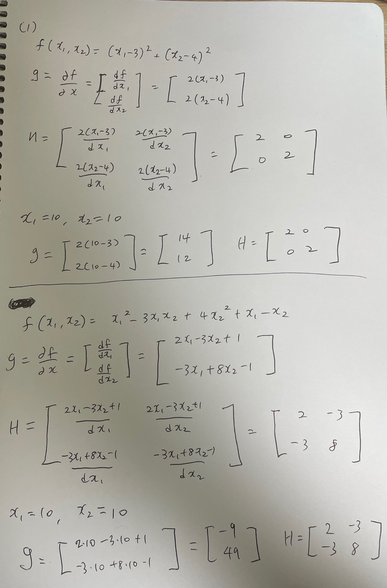
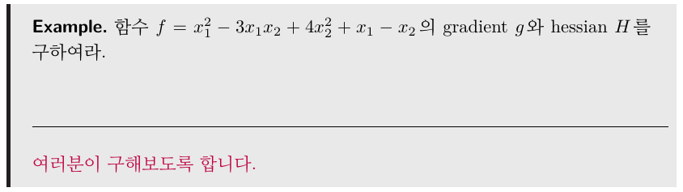
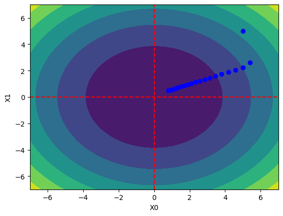
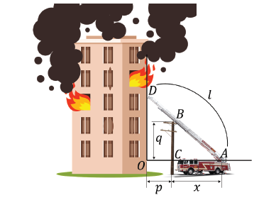
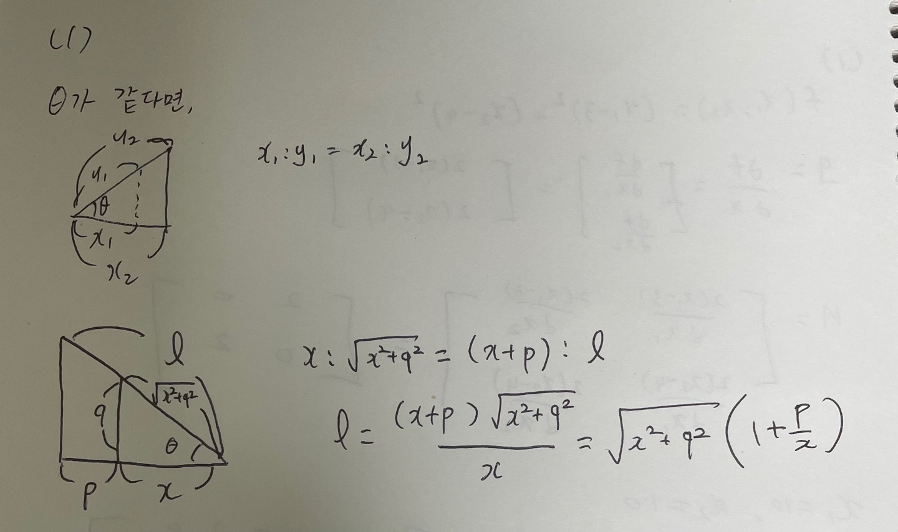
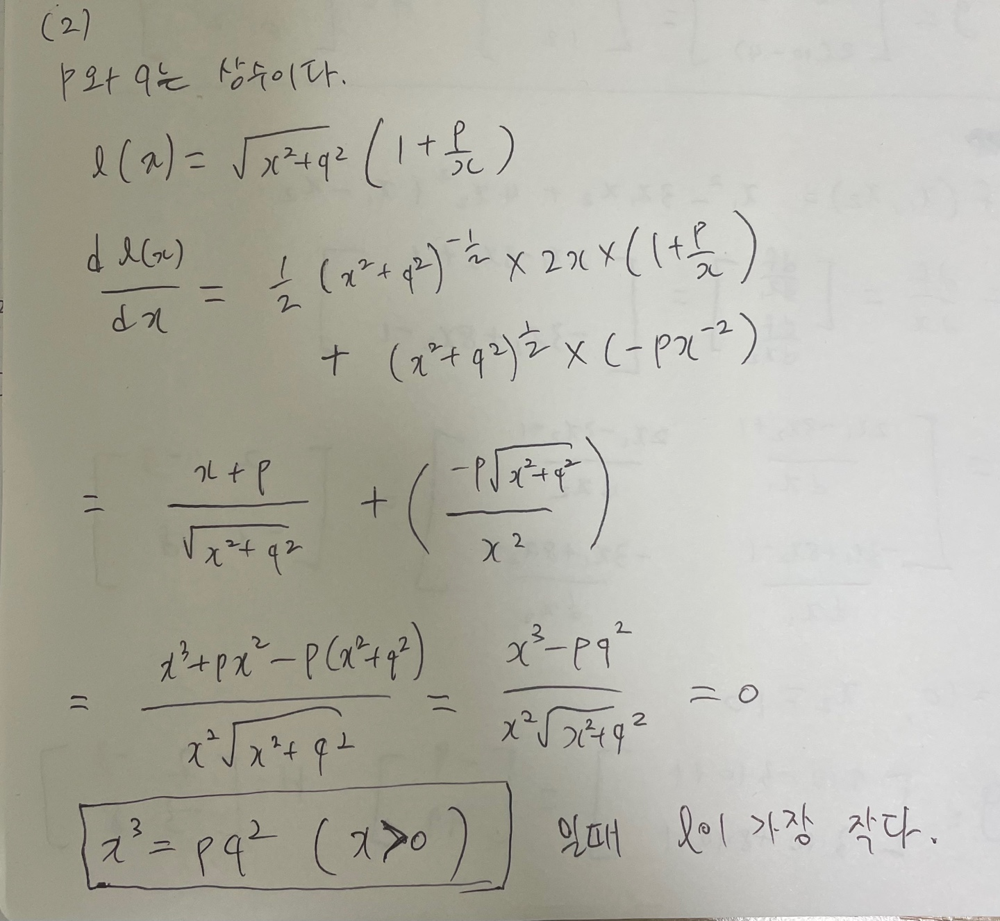
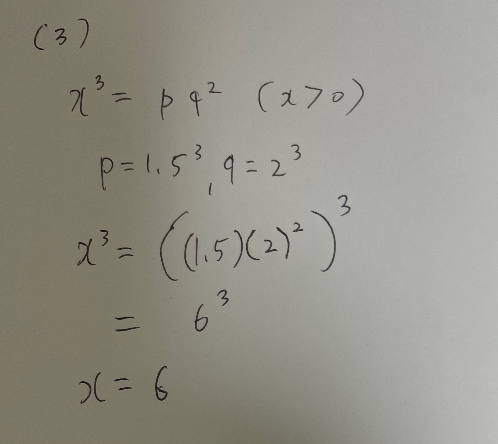
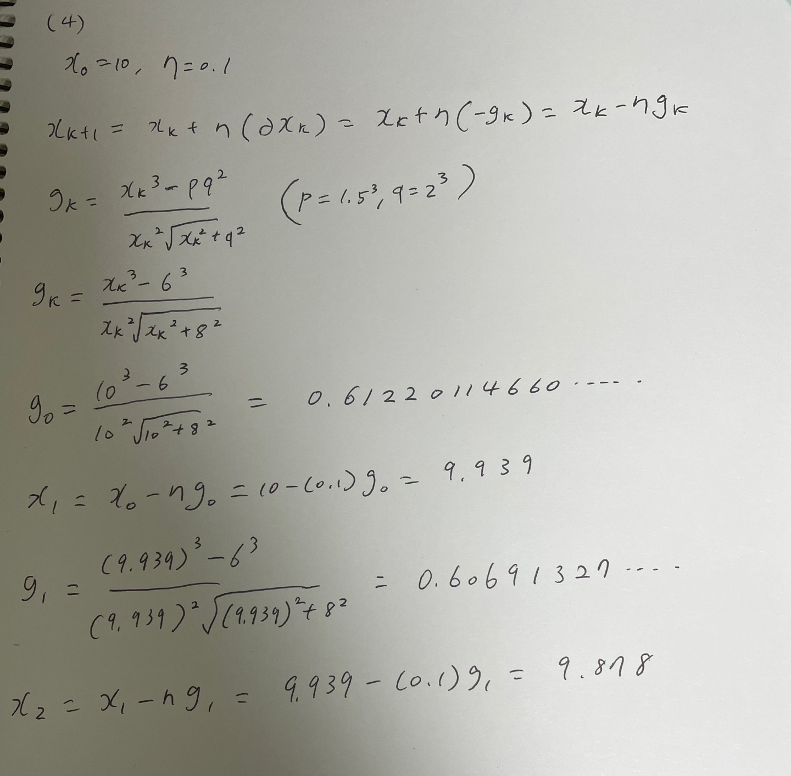

import numpy as np
import matplotlib.pylab as pltAssignment · Optimization: Gradient, Hessian & Gradient Descent
Analytical and numerical derivatives, gradient-descent trajectories, and a ladder-length minimization
Optimization assignment: gradients and Hessians by hand and numerically, gradient descent, and a geometric minimization problem.
Project at a glance
Problem: Derive gradients and Hessians, implement finite differences and gradient descent, and solve a geometric minimization problem.
Contribution / scope: Handwritten derivatives and NumPy implementations connect the analytical and numerical approaches.
Recorded evidence: The archived ladder-problem output is x ≈ 5.99995 after 5,000 iterations with a step size of 0.01.
Limitations: These small examples illustrate the method; they do not establish convergence for arbitrary objectives or step sizes.
NoteAbout this edition
English text and comments were edited for publication. Outputs are archived notebook results, not newly executed results. Exercise prompts and reference illustrations are course material; implementations and handwritten work are presented as coursework. Source and reproducibility notes.
TipSummary
Three problems. (1) For two quadratic functions, the gradient and Hessian at \((10, 10)\) are derived by hand and then reproduced with finite differences. (2) Gradient descent is implemented from scratch to minimize \(f(x) = x_0^2 - 3x_0x_1 + 4x_1^2 + x_0 - x_1\), and the optimization path is plotted. (3) A fire ladder leaning over a support pole must reach a wall: the ladder length \(l(x)\) is expressed in terms of the geometry, its minimizer is found analytically, two gradient-descent updates are carried out by hand, and the numerical solution is checked with the same gradient-descent code. Hand-written derivations are attached as images.
Optimization Problems
1. Gradient and Hessian
(1) For the two functions below, compute the gradient and the Hessian at \(x_1=10, x_2=10\) analytically.
- \(f_1(x) = (x_1-3)^2 + (x_2-4)^2\)
- \(f_2(x) = x_1^2 - 3x_1x_2 + 4x_2^2 + x_1 - x_2\)
Hand-written derivation:

(2) For the same two functions, compute the gradient and the Hessian at \(x_1=10, x_2=10\) numerically.
##################################################
# Define function 1 and 2 #
##################################################
def function_1(x):
return (x[0]-3)**2 + (x[1]-4)**2def function_2(x):
return x[0]**2 -3*x[0]*x[1] + 4*x[1]**2 + x[0]-x[1]
##################################################
# End of my code #
##################################################def numerical_diff(f, x):
h = 1e-5 # 0.00001
return (f(x + h) - f(x)) / hdef numerical_gradient(f, x):
##################################################
# Numerical gradient (my code) #
##################################################
h = 1e-4 # 0.0001
grad = np.zeros_like(x)
for idx in range(x.size):
tmp_val = x[idx]
# f(x+h)
x[idx] = tmp_val + h
f_x_plus_h = f(x)
# f(x)
x[idx] = tmp_val
fx = f(x)
grad[idx] = (f_x_plus_h - fx) / h
x[idx] = tmp_val
##################################################
# End of my code #
##################################################
return graddef numerical_hessian(f, x):
##################################################
# Numerical Hessian (my code) #
##################################################
h = 1e-5 # 0.0001
hessian = np.zeros_like((x, x))
x_n = x.copy();
# The partial differential of function f with respect to x_idx
for idx in range(x.size):
x_n[idx] = x[idx] + h
# df(x+h)
df_x_plus_h = numerical_gradient(f,x_n)
# df(x)
df_x = numerical_gradient(f,x)
hessian[:, idx] = (df_x_plus_h - df_x) / h
x_n = x.copy();
##################################################
# End of my code #
##################################################
return hessian##################################################
# Fill your code #
##################################################
# gradient of function1
print(numerical_gradient(function_1, np.array([10.0,10.0])))[14.0001 12.0001]# gradient of function2
print(numerical_gradient(function_2, np.array([10.0,10.0])))[-8.9999 49.0004]# hessian of function1
print(numerical_hessian(function_1, np.array([10.0,10.0])))[[1.99999306 0. ]
[0. 2.00000727]]# hessian of function2
print(numerical_hessian(function_2, np.array([10.0,10.0])))
##################################################
# End of my code #
##################################################[[ 2.00000727 -3.00002512]
[-3.00002512 8.00002908]]2. Gradient Descent Rule #1

(1) Using the gradient descent rule, find the minimizer \(x^*\) of the function above numerically.
##################################################
# Define the function #
##################################################
def function_2(x):
return x[0]**2 -3*x[0]*x[1] + 4*x[1]**2 + x[0]-x[1]
##################################################
# End of my code #
##################################################def gradient_descent(f, x_0, eta, max_iter):
##################################################
# Gradient descent rule (my code) #
##################################################
x_k = x_0
for k in range(max_iter):
g_k = numerical_gradient(f,x_k)
partial_x_k = -g_k
x_k = x_k + eta * partial_x_k
##################################################
# End of my code #
##################################################
return x_kx_0 = np.array([5.0, 5.0])
eta = 0.01
max_iter=1500
##################################################
# Run gradient_descent #
##################################################
x_opt = gradient_descent(function_2, x_0=x_0, eta= eta, max_iter=max_iter)
##################################################
# End of my code #
##################################################
print(x_opt)[-0.71449673 -0.14298335](2) Plot the path of the iterates \(x\) as gradient descent converges to the optimum.
eta = 0.1
max_iter = 20
##################################################
# _gradient_descent that records the history #
##################################################
def _gradient_descent(f, x_0, eta, max_iter):
x =x_0
x_history = []
for k in range(max_iter):
x_history.append(x.copy())
g = numerical_gradient(f,x)
x = x- eta*g
return x, np.array(x_history)
##################################################
# End of my code #
##################################################
x_0 = np.array([5.0, 5.0])
##################################################
# Find the optimum with _gradient_descent #
##################################################
x, x_history = _gradient_descent(function_2, x_0, eta=eta, max_iter=max_iter)
##################################################
# End of my code #
##################################################
plt.plot( [-7, 7], [0,0], '--r')
plt.plot( [0,0], [-7, 7], '--r')
plt.plot(x_history[:,0], x_history[:,1], 'bo')
# https://www.geeksforgeeks.org/contour-plot-using-matplotlib-python/
feature_x = np.linspace(-7.0, 7.0, 100)
feature_y = np.linspace(-7.0, 7.0, 100)
# Creating 2-D grid of features
[X, Y] = np.meshgrid(feature_x, feature_y)
Z = X ** 2 + Y ** 2
# plots filled contour plot
plt.contourf(X, Y, Z)
plt.xlim(-7.0, 7.0)
plt.ylim(-7.0, 7.0)
plt.xlabel("X0")
plt.ylabel("X1")
plt.show()
3. Gradient Descent Rule #2
A building is on fire and the fire brigade has arrived, as shown in the figure below.
The fire truck is parked at point A, and a ladder is extended to enter the building.
The ladder rests on a support pole at C and reaches the wall of the building at D.
\(x\) : distance between the support pole (C) and the foot of the ladder (A).
\(p\) : distance between the building (O) and the support pole (C).
\(q\) : height of the support pole, i.e. the height of the ladder at C (B).
\(l\) : length of the ladder from its foot (A) to the building (D).

(1) Express the ladder length \(l\) in terms of \(x, p, q\).
Hand-written derivation:

(2) Using the expression from (1), find the \(x\) that minimizes \(l\) analytically.
Hand-written derivation:

(3) With \(p=1.5^3, q=2^3\), find the \(x\) that minimizes the ladder length \(l\) analytically.
Hand-written derivation:

(4) With \(p=1.5^3, q=2^3\), we want to find the minimizer \(x\) of \(l\) with the gradient descent rule. Write out two updates of gradient descent analytically (3 decimal places; initial value 10, step size 0.1).
Hand-written derivation:

(5) With \(p=1.5^3, q=2^3\), use the expression from (1) and the gradient descent rule to find the minimizer \(x\) of the ladder length \(l\) numerically.
##################################################
# Define the function #
##################################################
def function_3(x):
return np.sqrt(x**2 + 8**2)*(1+(1.5**3)/x)
##################################################
# End of my code #
##################################################def gradient_descent(f, x_0, eta, max_iter):
##################################################
# Gradient descent rule (my code) #
##################################################
x_k = x_0
for k in range(max_iter):
g_k = numerical_gradient(f,x_k)
partial_x_k = -g_k
x_k = x_k + eta*partial_x_k
##################################################
# End of my code #
##################################################
return x_kx_0 = np.array([5.0])
eta = 0.01
max_iter = 5000
##################################################
# Run gradient_descent #
##################################################
x_opt = gradient_descent(function_3, x_0=x_0, eta=eta, max_iter=max_iter)
##################################################
# End of my code #
##################################################
print(x_opt)[5.99994976]